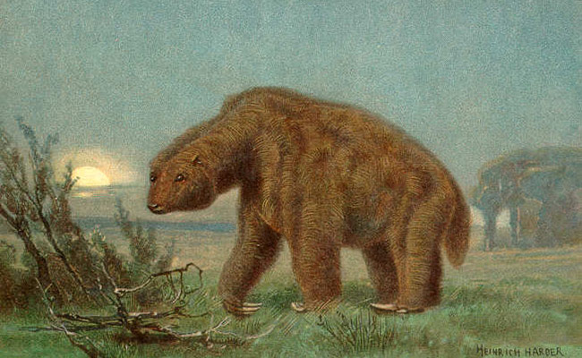

Prehistoric mammals
-

Arsinoitherium
Arsinoitherium is an extinct genus mammal that were superficially rhinoceros-like herbivores that lived in northern Africa from 36 to 30 million years ago.
Learn more about Arsinoitherium -

Elasmotherium
Elasmotherium, also known as the Giant Siberian Unicorn, is an extinct genus of rhinoceros endemic to Eurasia during the Late Pliocene through the Pleistocene.
Learn more about Elasmotherium -

Glyptodon
Glyptodon was a large, armored mammal, a relative of armadillos that lived during the Pleistocene epoch.
Learn more about Glyptodon -

Megatherium
Megatherium was a genus of elephant-sized ground sloths endemic to South America that lived from the Early Pliocene to the Pleistocene.
Learn more about Megatherium